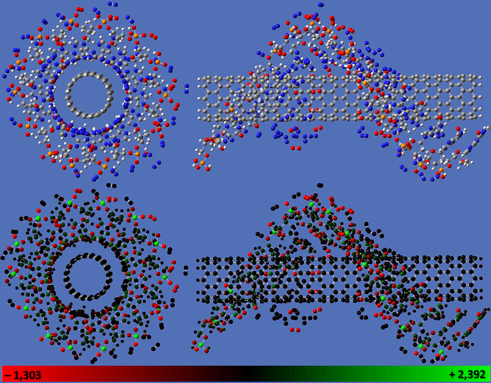
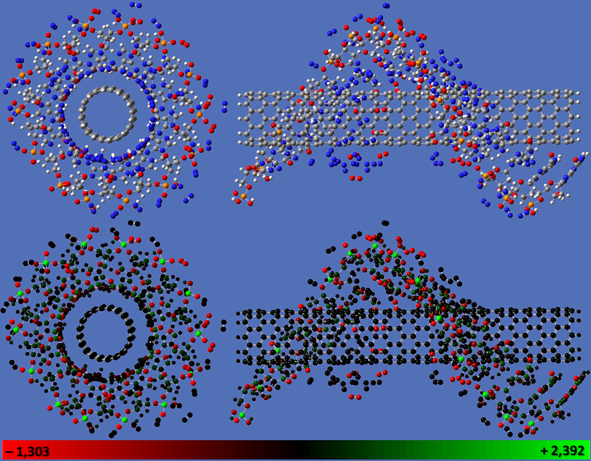

CrystaLattE es una nueva herramienta de software que automatiza el cálculo, en dos niveles de parelización, de energías reticulares de cristales moleculares. El programa está diseñado con el objetivo de calcular energías reticulares suficientemente exactas como para discriminar entre polimorfos de baja energía de cristales orgánicos. Nuestro enfoque utiliza la aproximación de la expansión de muchos cuerpos y explota el orden periódico tridimensional de largo alcance de los cristales para calcular automáticamente las energías reticulares a nivel de exactitud química. El código está diseñado para conectarse con el Controlador Común de Química Cuántica y Bases de Datos (QCDB) y explota algunas de sus características únicas. CrystaLattE también usa una interfaz con el paquete de química computacional PSI4, que se emplea para ejecutar los cálculos de energía. El código está escrito en Python 3 y se distribuye como software de código abierto a través de GitHub.
Una nueva base de datos de referencia de energías reticulares se ha generado con CrystaLattE. Esta base de datos demuestra un esquema jerárquico, incluido en CrystaLattE, que emplea el método CCSD(T)/CBS para las interacciones más relevantes y MP2/aug-cc-pVDZ para interacciones más distantes. Nuestra base de datos incluye pequeñas moléculas orgánicas contenidas en otras bases de datos de cristales y la expande con un conjunto adicional de cristales moleculares relevantes en aplicaciones farmacéuticas y de investigación en energía. Las energías reticulares de referencia de esta base de datos se comparan con las mismas obtenidas a través del uso de aproximaciones funcionales de densidad, para evaluar la aplicabilidad de estos métodos en la predicción de la estructura cristalina.
El potencial de fragmento efectivo (EFP) es una aproximación sistemática para describir interacciones intermoleculares en un modo eficiente y riguroso. EFP es un potencial basado en mecánica cuántica que puede ser visto como un campo de fuerza polarizable no empírico. En este trabajo, se analiza la evolución temporal de las energías electrostática, de polarización, dispersiva y de repulsión de intercambio en pequeños agregados de agua, simulados en el colectivo microcanónico. Con base en estos resultados, se explora un enfoque para acelerar las simulaciones de dinámica molecular EFP mediante la explotación de la inherente separación de escalas de tiempo entre cada una de estas contribuciones de energía.

Capturar de la complejidad del agua a escala molecular siempre ha sido un reto, una tarea que ha necesitado de la descripción clásica y cuántica de las interacciones intermoleculares. En las ciencias físicas y de los seres vivos, el agua juega un papel esencial en la estabilización de biomoléculas y en reacciones químicas ácido-base. Además, la descripción detallada de los mecanismos básicos de formación del hielo es crucial en la comprensión de problemas ambientales y fenómenos atmosféricos. Sin embargo, muchos modelos clásicos del agua no son adecuados para el estudio de sistemas de baja temperatura porque desprecian efectos no aditivos de interacciones de más de dos cuerpos, y los métodos cuánticos se limitan a sistemas moleculares de pequeñas dimensiones. Se requieren métodos teóricos que pueden explicar con precisión los diversos tipos de interacciones intermoleculares existentes en el agua. En este proyecto, el equilibrio termodinámico entre el agua y el hielo se exploró usando dinámica molecular EFP. El punto de fusión del hielo EFP fue calculado con base en el análisis de la evolución de la energía total a lo largo de simulaciones en el colectivo isotérmico-isobárico a diferentes temperaturas.
Los hidrogeles son materiales capaces de absorber agua dentro de redes de polímeros hidrofílicos entrelazados. Han sido ampliamente investigados por su uso en ciencia de materiales, nanotecnología y productos farmacéuticos recientes. Sin embargo, no se conocen bien los detalles de un mecanismo que explique sus características como absorbentes de agua. Usando dinámica molecular atomística, se estudió la transformación estructural debida a la absorción de agua en nanohidrogeles de quitosano. Se simularon dos conjuntos de modelos, de escala nanométrica, de una cadena de quitosano: uno para estudiar la dependencia del hinchamiento con respecto al grado de entrecruzamiento, y otro para observar la respuesta en relación con el grado de protonación. Se verificó que los nanohidrogeles mantienen su capacidad de absorber agua e hincharse, independientemente de su grado de entrecruzamiento. Notablemente, se encontró que el comportamiento del hinchamiento del quitosano a escala nanométrica es dependiente del pH, y que es mucho más limitado que la de hidrogeles de mayor escala. Por lo tanto, este estudio sugiere que las propiedades de los nanohidrogeles son significativamente diferentes de las de los hidrogeles de mayor escala. Estos hallazgos se han publicado recientemente en el Journal of Physical Chemistry B.
La biodisponibilidad de un alto porcentaje de nuevos candidatos a fármacos está limitada por su baja solubilidad. El uso de la forma amorfa del fármaco es una buena estrategia para mejorar su solubilidad. Sin embargo, el estado amorfo es inestable, y el fármaco cristaliza con el paso del tiempo, perdiendo su ventaja de solubilidad. Polímeros son utilizados para estabilizar formulaciones amorfas, y para mantener altas sobresaturaciones después de la disolución de la formulación. Mientras que los estudios experimentales con polímeros comerciales muestran diferencias en la efectividad de cada polímero, el mecanismo molecular de la estabilización todavía no está claro, por lo que el diseño racional de nuevos polímeros es desafiante. Esta colaboración con la Dra. Mosquera-Giraldo y la Prof. Taylor, explora cómo sustituyentes químicamente diversos impactan la efectividad de nuevos polímeros de celulosa como inhibidores de la cristalización. Dinámica molecular y cálculos químicos cuánticos se utilizaron para investigar cómo la diversidad química modifica la conformación del polímero y la dinámica. Estos resultados ayudan a explicar por qué dos polímeros con grupos químicos similares pueden mostrar efectividad diferente debido a fuertes interacciones intramoleculares no covalentes. Estos hallazgos se han publicado recientemente en la revista Biomacromolecules.
Las sales biliares son surfactantes naturales presentes en el tracto gastrointestinal humano. Por lo tanto, es esencial tener en cuenta su efecto sobre la disolución y cristalización de formulaciones orales de fármacos. Aunque recientemente se ha demostrado que el taurocolato de sodio, una sal biliar común, puede retrasar la nucleación de ciertos compuestos, la información acerca de las propiedades de inhibición de la cristalización de otras sales biliares es limitada. En este proyecto, se utilizaron simulaciones de dinámica molecular para asistir la evaluación de la capacidad de varias sales biliares para mantener soluciones acuosas sobresaturadas de tres compuestos farmacológicos: celecoxib, nevirapina y flibanserina. Experimentalmente, la mayoría de las sales biliares retrasó la nucleación. Sin embargo, sus efectos inhibidores varían dependiendo de la estructura y concentración de la sal biliar y el fármaco. Simulaciones de dinámica molecular indicaron que interacciones de van der Waals y de enlace de hidrógeno se producen entre fármacos y sales biliares y que varían entre diferentes sistemas. Estos resultados son importantes para entender mejor la tendencia a cristalizar de compuestos poco solubles en agua administrados por vía oral in vivo. Estos hallazgos han sido reportados recientemente en la revista Crystal Growth & Design.
La mayoría de los estudios que evalúan dispersiones sólidas amorfas (ASDs) utilizan técnicas de evaporación de solventes como método de preparación. Sin embargo, el impacto de las propiedades del sistema solvente/cosolvente sobre la conformación del polímero y el comportamiento de fases de las mezclas resultantes de fármaco-polímero es poco conocido. Esta es una investigación de la influencia de las propiedades del solvente en el comportamiento de fases de las ASDs que contienen itraconazol (ITZ) e hidroxipropilmetil celulosa (HPMC), preparados utilizando recubrimiento por centrifugación de sistemas cosolventes binarios/ternarios que contienen alcoholes alquílicos, diclorometano (DCM) y agua. La compatibilidad del polímero con el sistema cosolvente se analizó utilizando técnicas de imagen de alta resolución complementadas por simulaciones de dinámica molecular. Se encontró que los alcoholes de cadena corta, metanol y etanol, inducen separación del fármaco y el polímero en presencia de agua. Por el contrario, se observó mezcla inducida por agua cuando se usaron alcoholes más grandes, n-propanol y n-butanol, como cosolventes. Isopropanol produjo ASDs de fases separadas en condiciones húmedas y secas. Este comportamiento de fase inducido por el solvente muestra la importancia de realizar un filtrado exhaustivo de solventes antes de la preparación de los ASDs. Este estudio destaca la compleja interacción de las propiedades de los componentes y las condiciones de formación de la microestructura ASD resultante y, en última instancia, estas observaciones pueden ayudar a mejorar el diseño racional de ASDs producidos a través de la evaporación de solvente.

Las fuerzas de van der Waals son esenciales para determinar la estructura y propiedades de biomoléculas y materiales. Desempeñan un papel fundamental en campos tan diversos como la química supramolecular, la biología estructural, la ciencia de polímeros, la nanotecnología, la ciencia de superficies, y la física de la materia condensada; además de proporcionar explicaciones para fenómenos químicos, físicos y biológicos tales como: cómo se apilan las bases en el ADN, qué da estructura al grafito, o por qué las lagartijas pueden adherirse al vidrio. En este proyecto dirigido por el Dr. Correa y el Dr. Andrade, del Laboratorio Nacional Lawrence Livermore, se presentó la derivación de las ecuaciones del método Tkatchenko-Scheffler para interacciones de van der Waals y se propuso una implementación portátil en C. En particular, se derivaron las expresiones para la fuerza y para el potencial intercambio y correlación. Una interfaz para el código de la biblioteca portátil fue diseñada para permitir la implementación modular en códigos con diferentes representaciones de conjuntos de base. Una implementación piloto en el código Octopus se probó, validado sus resultados con otros códigos, para consistencia interna. Se comprobaron los resultados para propiedades tanto en el estado fundamental y cómo en estados excitados.
La mayoría de las aproximaciones al funcional de intercambio y correlación de la Teoría del Funcional Densidad de Kohn-Sham conducen a errores de deslocalización que perjudican la descripción de fenómenos de transferencia de carga. Una exploración de cómo diversos funcionales aproximados y esquemas de distribución de carga describen las distribuciones de carga atómica en el estado fundamental se llevó a cabo en el complejo del litio-benceno, un sistema modelo relevante para supercondensadores basados en carbono. Para entender las tendencias, comparaciones con cálculos de Hartree-Fock (HF) y post-HF correlacionados se llevaron a cabo, confirmando que la brecha HOMO-LUMO es muy estrecha en funcionales semilocales, y muy ancha en funcionales híbridos con grandes fracciones de intercambio de HF. En este proyecto se analizó y explicó por qué sucede esto, discutiendo las implicaciones, y concluyendo que los funcionales híbridos con una mezcla de aproximadamente un cuarto de intercambio de HF, tales como PBE0 o B3LYP, son particularmente útiles para describir la transferencia de carga en el modelo del litio-benceno. Estos hallazgos se han publicado recientemente en el Journal of Physical Chemistry A.
En esta colaboración con el Dr. Mosquera, el Prof. Ratner, y el Prof. Schatz de la Universidad Northwestern, se examina la teoría generalizada de Kohn-Sham (GKS) para funcionales híbridos, una extensión de la teoría de Kohn-Sham para estados electrónicos fundamentales que conduce a una variedad de funcionales de la densidad alternativos, íntimamente relacionados con la aproximación local de la densidad (LDA). Se analiza por qué la inclusión de intercambio de Hartree-Fock (HF), y su forma corregida a largo alcance, dominan sobre las correcciones generalizadas del gradiente en la mejora de la calidad de la brecha fundamental y de las estimaciones de energías de excitación. Como una ilustración de la amplia gama de posibilidades creadas por este trabajo, se presenta a CAM-LDA0: un funcional de tres parámetros, con un cuarto de interacción de HF global y un medio para largo alcance; un factor de separación de rango de un tercio; y el intercambio y correlación de LDA puro. CAM-LDA0 funciona para excitaciones electrónicas tan bien como el funcional CAM-B3LYP, con la ventaja de una reducción del costo computacional debido a la omisión de las engorrosas correcciones generalizadas de gradiente. Estos hallazgos se han publicado recientemente en el Journal of Physical Chemistry A.
 

Los nitratos de carbonilo se producen a partir de la oxidación de isopreno iniciada por el NO3, constituyéndolos en un depósito de NOx potencialmente importante. En esta colaboración con el grupo del Prof. Shepson en la Universidad Purdue, el proceso de degradación fotoquímica de los nitratos de carbonilo de isopreno se investiga para entender mejor su destino. En un proyecto, se calcularon y correlacionaron los espectros de absorción ultravioleta teóricos, en fase gaseosa, del nitrato de carbonilo de isopreno, metacroleína, y nitrato de n-butilo, utilizando la teoría funcional de la densidad dependiente del tiempo (TDDFT). Estos hallazgos fueron reportados en Atmospheric Chemistry and Physics Discussions. En un segundo proyecto, los posibles caminos de reacción del nitrato de isobutilo en agua se analizaron utilizando DFT. Algunos de estos hallazgos han sido reportados recientemente en Atmospheric Chemistry and Physics Discussions.
Los nanotubos de carbono (CNT) constituyen excelentes candidatos para el desarrollo de nuevas generaciones de sensores a nanoescala, gracias a sus atractivas propiedades electrónicas, mecánicas y químicas. En particular, se ha demostrado que la funcionalización de nanotubos de carbono con diferentes grupos les confiere selectividad para sustancias específicas. En esta contribución, se presentó un estudio computacional de las propiedades electrónicas de nanotubos de carbono semiconductores de pared simple (SWCNT), funcionalizados no covalentemente con hebras de homopolinucleótidos, para analizar su respuesta frente a la exposición a mezclas de gases prototípicas, con el fin de evaluar su potencial utilidad como transductores en la construcción de nanosensores y narices químicas. La respuesta electrónica de los transductores se caracterizó mediante la evaluación de la distribución de carga atómica y la diferencia de potencial electrostático entre los terminales del nanotubo. Se observó una transferencia parcial de electrones desde el nanotubo hacia moléculas de oxígeno cuando estos transductores modelo fueron expuestos a mezclas gases atmosféricos.